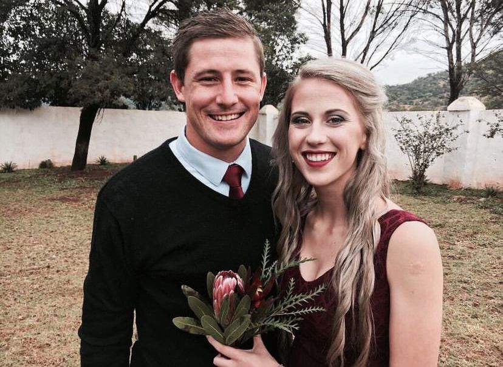
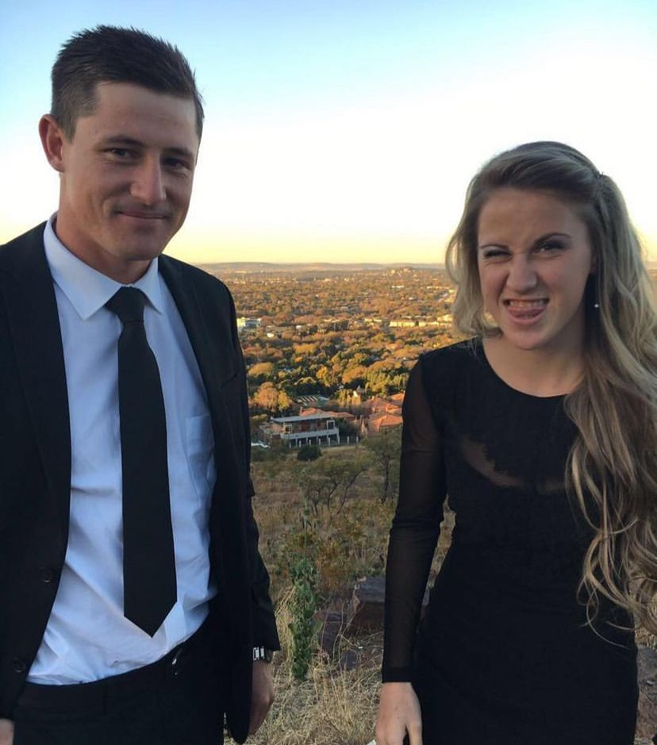
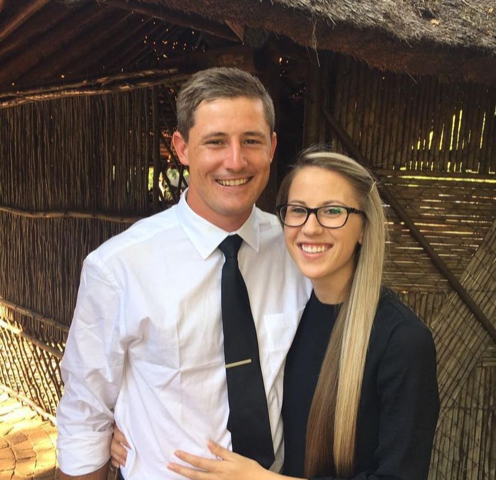

We were both still in high school when we started dating. I was grade 9 and Vorster was matric. Vorster did not have anyone to go with to the matric dance and so he asked me. I said yes and was super excited that I got to go to a matric dance. That night we had lot of fun but most of all we released how much we had in common and continued talking daily thereafter. Three months later Vorster asked me on a date and the rest is history.